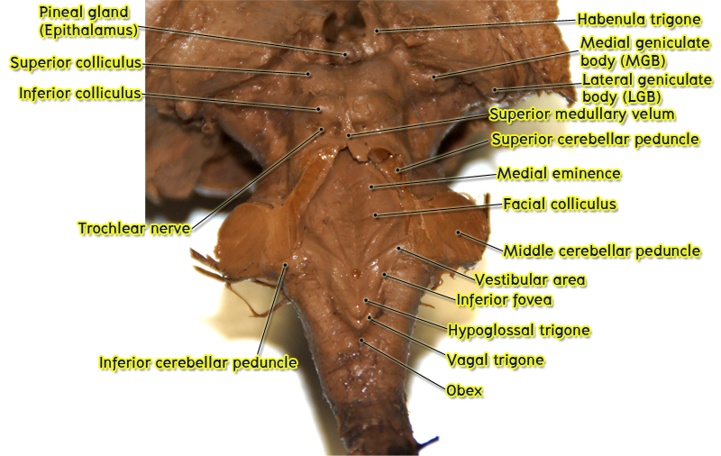

ศึกษา brainstem anatomy
จาก whole brain และ bisected brain จะเห็นว่า brainstem มีรูปร่างคล้ายก้านของสมอง เชื่อม spinal cord ซึ่งอยู่ inferior กว่ามันกับ forebrain ซึ่งอยู่ superior กว่ามัน ให้ชี้แสดงส่วนต่าง ๆ ของ brain stem ดังต่อไปนี้
- Medulla oblongata (อาจเรียกสั้น ๆ ว่า medulla) อยู่ inferior ที่สุด เป็นส่วนที่ต่อขึ้นมาจาก spinal cord
- Pons เป็นส่วนของ brainstem ที่อยู่ superior กว่า medulla ทางด้าน ventral (anterior) surface มีลักษณะป่องออกคล้ายกับคนตั้งท้อง
- Midbrain เป็น brainstem ส่วนสั้น ๆ ที่อยู่ superior กว่า pons ทางด้าน dorsal (posterior) surface มีลักษณะเป็นเนินนูน 4 ลูก


ทางด้าน posterior surface ของ pons และ rostral half ของ medulla ถูกคลุมอยู่ด้วย cerebellum ให้ชี้แสดง cerebellum ใน bisected brain และ whole brain


ให้สังเกตว่า ภายในเนื้อของ caudal (inferior) half ของ medulla มีช่องว่างภายใน ช่องว่างนี้ติดต่อกับ central canal ของ spinal cord จึงเรียก brainstem ส่วนนี้ว่าเป็น closed part of medulla ช่องว่างนี้อาจมองไม่เห็นจาก sagittal view ของ bisected brainเพราะมีขนาดเล็กทำให้ไม่ถูกตัดผ่าน